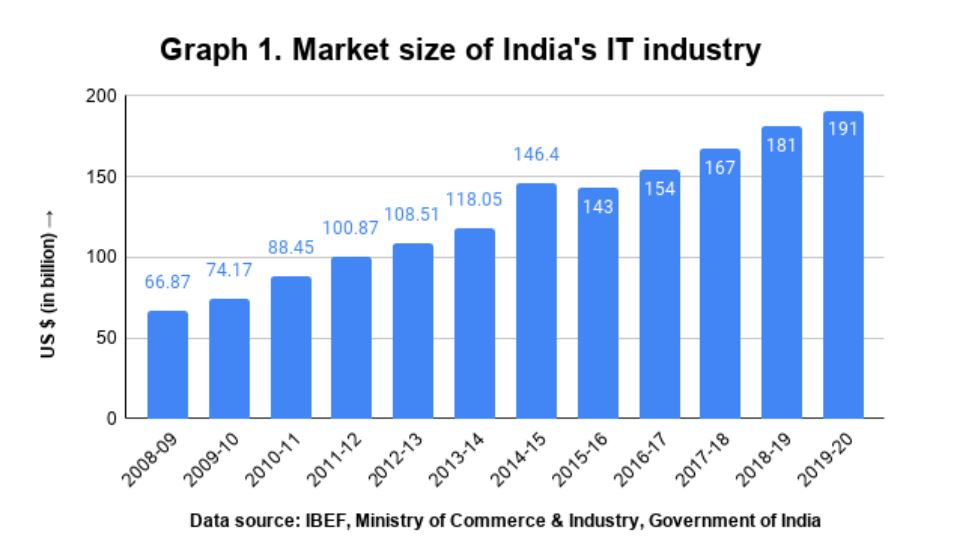
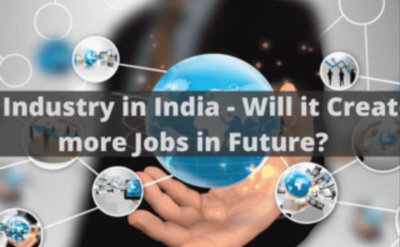
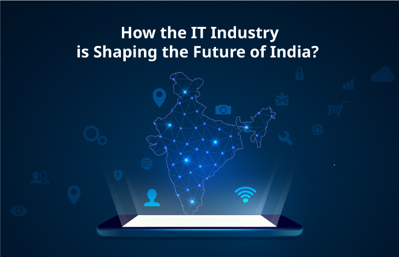

2. Devlopment in IT Industrys

The growth of the IT industry in India is unprecedented across the economies of the world.
All the sub-sectors of this industry (hardware products have relatively seen less progress)
have made strides in revenue growth in the last two decades and fueled the growth of the Indian economy.
The rapid advancement within the IT industry and liberalisation policies such as reducing trade
barriers and eliminating import duties on technology products by the Government of India are instrumental
in the growth of this industry.

Also, various other government initiatives like
setting up Software Technology Parks (STP), Export Oriented Units (EOU), Special Economic Zones (SEZ)
and foreign direct investment (FDI) have helped this industry in achieving a dominant position in the world IT industry.
In the present time, when the COVID-19 pandemic has grappled the whole world and economies have been hard hit.
Indian IT industry is still showing positive signs and has the resilience to overcome this unprecedented tragedy.
It has emerged as a global economic force and a major contributor to the Indian economy in particular
and the world in general. This article tries to outline how the Indian IT industry has evolved over the years and
its prominent role in boosting Indian’s growth.
IT industry boosting India’s growth
Indian IT industry has grown rapidly with an exponential growth rate after the
economic reform of 1991-92. Indian IT companies have set up thousands of centres within
Indian and around 80 countries across the world.
The majority of global corporations are
sourcing IT-ITES from the Indian IT industry, it accounts for approximately 55 percent of
the global service sourcing market (US$ 200-250 billion) in 2019-20. The market size
(especially export) of the IT industry has grown manifold from approx. 67 billion US
dollars in 2008-09 to 191 billion US dollars in 2019-20 (Graph 1).

*The revenue is further expected to grow in the coming years with an accelerating growth rate and expected
to reach 350 billion US dollars by 2025.
The remarkable feature of India’s IT industry is that along with its expansion in terms of
market size it is also incrementally adding a significant share to India’s gross domestic
product (GDP) and consequently boosting the growth and development of the country.
*From a minuscule 0.4 percent in 1991-92, the IT industry contributed around eight percent in 2017-18
to the total GDP of India (Graph 2). This share is expected to increase to ten percent by 2025.
India’s digitally skilled pool has grown over the period and accounted for around 75 percent of
global digital talent. India’s four large IT companies (TCS, Infosys, Wipro, HCL Tech) have employed
more than one million employees.
New IT-based technologies such as telemedicine, remote monitoring, etc.
are expanding and boosting the demand in the digital economy.
The rollout of fifth-generation (5G)
communication technology, growing adoption of artificial intelligence, Big Data analytics, cloud computing
and the Internet of Things (IoT) will further expand the size of the IT industry in India.
As the size of India’s digital economy is increasing, IT companies are establishing their
centres in tier II and tier III cities which will further
enhance the growth and reduce the existing disparities.